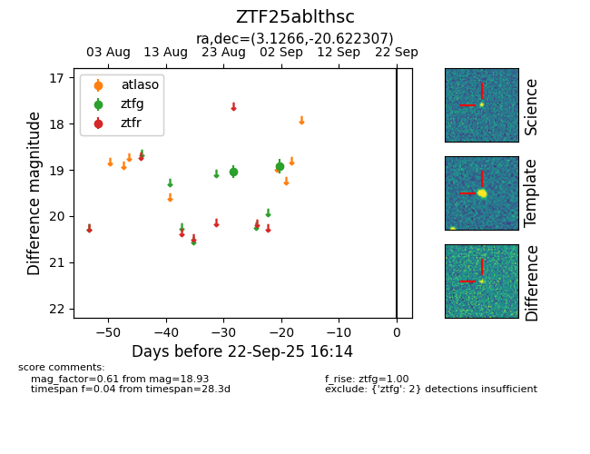

FINK: ZTF25ablthsc
Lasair: ZTF25ablthsc
ALeRCE: ZTF25ablthsc
ZTF25ablthsc (ztf,fink)
equatorial (ra, dec) = (3.1266,-20.62231)
galactic (l, b) = (67.0415,-78.98312)

last ztfg=18.93
2 ztfg detections